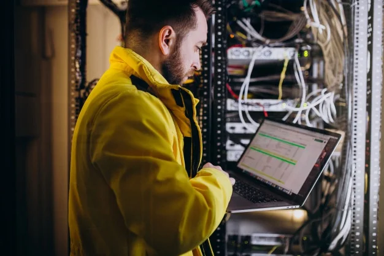

¿Cuál es el campo laboral de un Ingeniero en Telecomunicaciones?
El egresado de la Carrera de Ingeniería en Telecomunicaciones tiene muchas opciones de trabajo, y una alta
perspectiva de crecimiento laboral en todo el mundo ya que muchos países están adaptándose a las nuevas
tecnologías de la información y comunicación (TIC) y necesitan mano de obra capacitada.
El Ingeniero en Telecomunicaciones puede actuar en el área de infraestructura, en los ámbitos privados y
público. Puede integrar un equipo de profesionales responsables de proyectar, implantar y gestionar los
sistemas y las redes de telecomunicaciones. En ese contexto, fiscaliza esos sistemas y redacta los laudos
técnicos de evaluación de los mismos.
Otro sector en expansión que ofrece oportunidades de trabajo es el de Internet Móvil. Aquí, el egresado
desarrolla sistemas de transmisión de datos por medio de aparatos inalámbricos con acceso a Internet.
Además, participa de la transferencia, recepción y decodificación de las señales digitales de televisión a cable y satélite.
Un ámbito laboral muy común para un egresado de la carrera de Telecomunicaciones son las compañías operadoras
de servicios de telecomunicaciones. Dentro de las mismas pueden desarrollar actividades muy prácticas,
creando y adaptando tecnologías.
Por otro lado, un profesional de las telecomunicaciones puede ofrecer servicios de ciberseguridad. Si bien no
es propiamente un trabajo de esta disciplina, la ciberseguridad es una de sus ramas. Por lo tanto, pueden
desempeñarse dentro de esta área creando e implementando sistemas que aseguren la protección de datos en empresas.
También existe la posibilidad de que el Ingeniero en Telecomunicaciones ejerza como emprendedor, prestando
servicios a grandes empresas públicas y privadas. En este sector puede crear nuevas tecnologías y ofrecer
consultoría técnica para la implementación y supervisión de sistemas de telecomunicaciones.

¿Por qué estudiar la carrera de Ingeniería en Telecomunicaciones?
Si con todo lo que te estuvimos contando sobre esta carrera, todavía no estás muy convencido, a
continuación te vamos a dar algunas buenas razones para que te animes a inscribirte.
Es una carrera en constante evolución
Todos los días hay nuevos avances de la tecnología. Por lo tanto, todo el tiempo vas a estar
investigando nuevas tendencias y aplicándolas a las diferentes áreas de la vida. Sin dudas,
es una profesión en la que no te vas a aburrir ya que siempre vas a tener cosas nuevas para hacer.
Vas a ser parte de la evolución de la humanidad
Como mencionamos en el apartado anterior, las telecomunicaciones evolucionan constantemente. Además
impactan en la vida individual, económica e industrial. Por lo tanto, trabajando en el mundo de las
telecomunicaciones, vas a formar parte de cambios muy importantes para la humanidad.
Tiene un amplio campo laboral
Como vimos, el campo laboral en el que puede desempeñarse un egresado de la carrera de Ingeniería
en Telecomunicaciones es muy amplio. Además, como es una disciplina que evoluciona día a día, cada
vez se van a necesitar más profesionales que sepan manejar correctamente la tecnología.
Ofrece un salario competitivo
Trabajar como Ingeniero en Telecomunicaciones equivale a tener un buen sueldo. Según un estudio realizado
por la empresa de recursos humanos Adecco, un profesional que ocupa el puesto de Coordinador de Tecnología
Web puede tener un sueldo promedio de $94.352 mensuales si trabaja en una mediana empresa de Buenos Aires.
Asimismo, un profesional que ocupe el puesto de Analista de Seguridad Informática en la misma ubicación y
tipo de empresa puede ganar aproximadamente $69.079 mensuales.